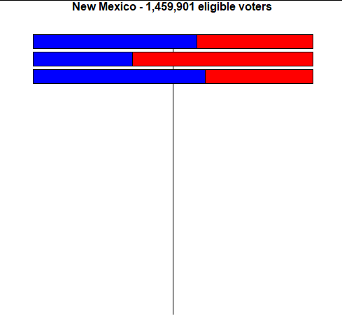
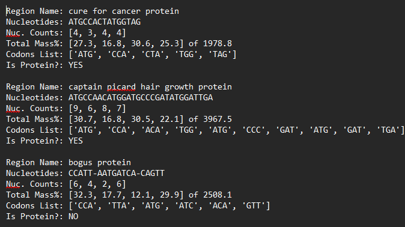

Gerrymandering Detection
Utilize python 3 to calculate statistics on a data set from an import a text file. The imported data was used to calculate the amount of wasted votes, number of eligible voters, and wasted vote percentage difference. The calculated metrics were displayed through the use of turtle graphics.

DNA Analysis
Utilize python 3 and the math library to import and export text files. Imported data was sorted allowing for mass calculations were used to provide a list of codons, and determine if the data was associated with a protein which were displayed in the exported text file.
Ongoing Projects
Project: Portfolio Update
Deadline: 2025-11-01
Days Remaining: